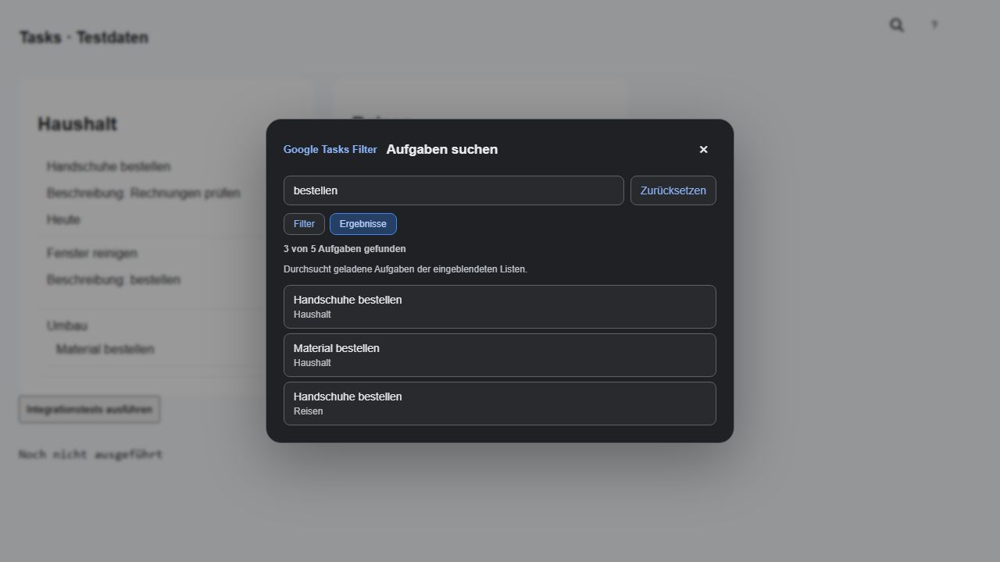

Across displayed lists
Filter keeps matching tasks in their original lists. Results collects actual title matches in a separate scrollable list while leaving Google’s tasks visible.
Chrome extension · In development
Search loaded Google Tasks by title. Choose Filter to narrow the original view, or Results to collect matching tasks with their list names.
Development version 0.3.0. Not yet published in the Chrome Web Store.
Inside your familiar workflow
Open Google Tasks and click the search icon beside Google’s help button. The search opens in a foreground dialog. Type part of a task title and switch between Filter and Results without losing your query. Results show each title and list name; identical titles remain separate. Click a result or activate it with Enter to close the dialog and scroll to the original row, focus it and briefly highlight it. Reset clears the search. Close, Escape or a backdrop click dismisses the dialog while keeping the current query. An active filter marks the search icon blue.

Filter keeps matching tasks in their original lists. Results collects actual title matches in a separate scrollable list while leaving Google’s tasks visible.
Loaded tasks and title changes update both views. Tab reaches the controls and results inside the dialog; Escape closes it from anywhere inside. Search text and view mode are not saved.
Search only changes the local view. Jumping to a result does not edit, complete or delete it; those actions remain in the original Google Tasks row.
No. Version 0.3.0 searches loaded tasks in displayed lists. Open completed sections and scroll to load more tasks when needed. Hidden lists and unloaded tasks are not included.
This version filters task titles only. Multiple words are treated as a continuous phrase, and special characters are matched literally.
The extension relies on the Google Tasks page structure. Recognized structural failures pause filtering and restore hidden rows. Compatibility updates may be necessary.
Privacy by design
No developer accessTask titles and search terms are processed locally and are not sent to the developer.
No persistent search storageNo extension storage, cookies or analytics. Reloading starts a fresh search.
Full privacy policy →Development status · October 14, 2026
Version 0.3.0 has automated core tests and synthetic browser integration checks. Installation and live behavior in Chrome and Edge still need verification before a Store release. The Chrome Web Store link and support contact will be added after publication.
Voluntary support
You can support maintenance voluntarily. Contributions do not unlock features or guarantee a release date.